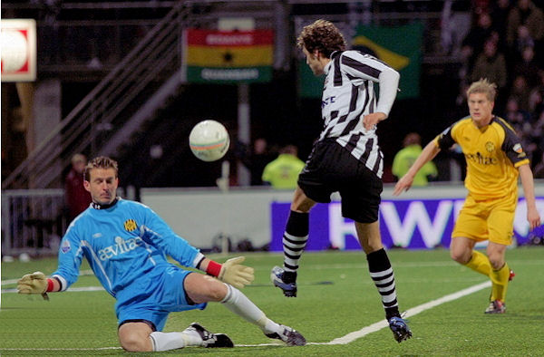
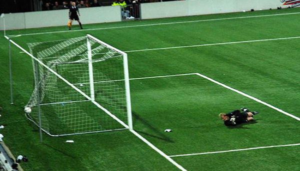
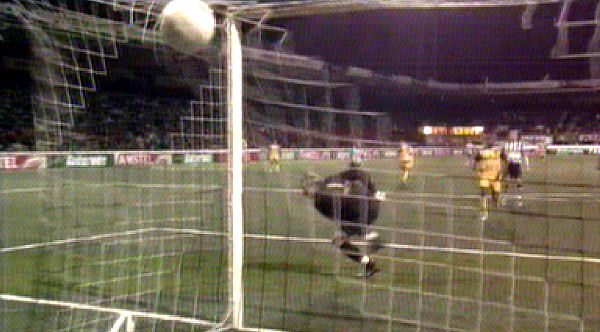
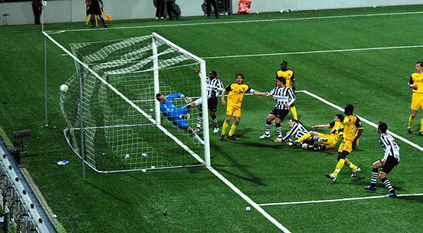
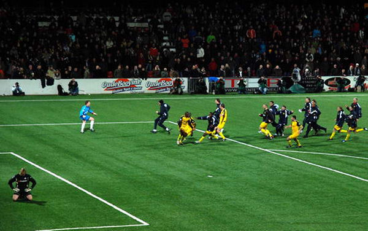
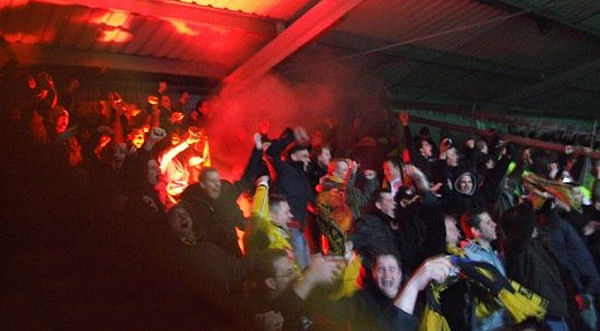
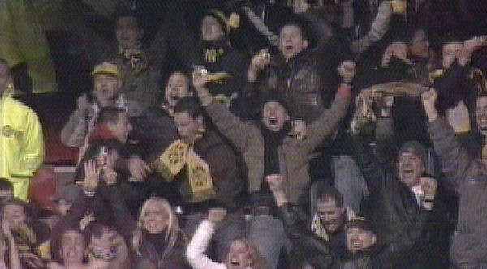
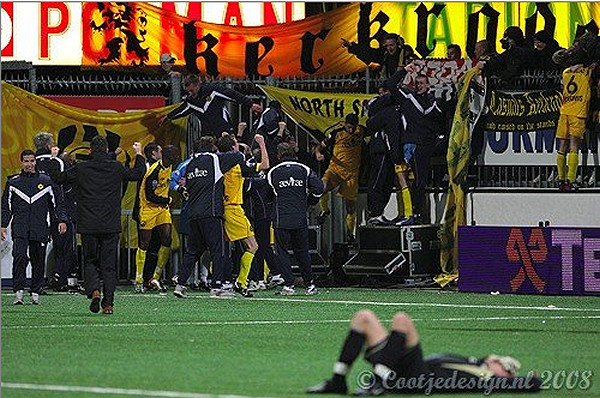

Garcia-Garcia stift de bal over Castro. Een prachtig doelpunt: 1-0, (17').

Nauwelijks een minuut later scoort Meeuwis de gelijkmaker: 1-1, (18').

Janssen ziet geen medespelers om af te leggen en besluit om zelf maar te
schieten. Zijn pegel knalt
keihard in het doel van Pieckenhagen: 1-2, (52').

Invaller Van den Bergh scoort uit een vrije trap prachtig de gelijkmaker:
2-2, (79'). Deze stand bleef
overeind zodat er verlengd moest worden. Na twee maal 15 minuten was er nog
steeds niet gescoord.
Dus....penalties!

Cissé schiet de beslissende penalty erin. Het feest kan beginnen.

Fakkel in een van de Rodavakken.

Vreugde-explosie bij de supporters.

De spelers feesten mee.
Verslag gebaseerd op foto's van diverse sites en op
screenshots RTL7